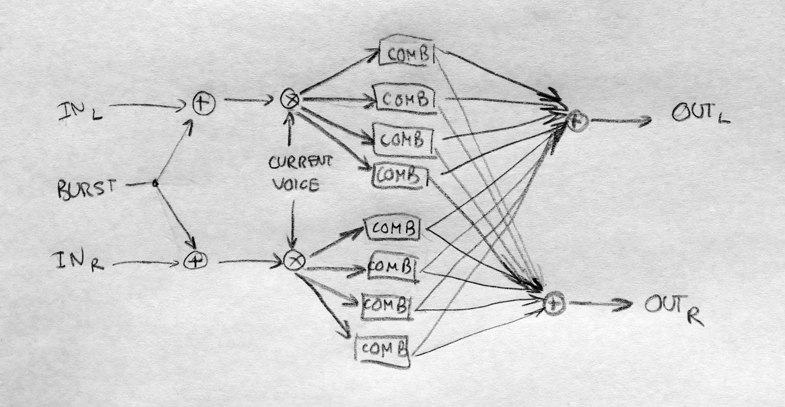
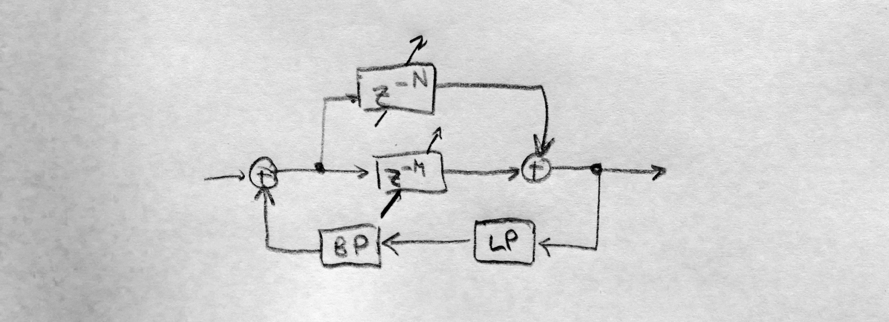

Clouds Parasite
Clouds Parasite is an alternative firmware for Clouds. It adds the following main features to the module:- The Oliverb, a new, full-featured creative reverb mode based on the reverb of the original firmware (itself based on a description of the Lexicon 480L), and inspired in design by the Erbe Verb, with CV control over all parameters. It is largely modeless, probably unrealistic and goes far beyond your traditional reverb;
- Resonestor, a polyphonic resonator processor with built-in support for your beloved Karplus-Strong synthesis. Plucked or fed with your favorite sound, it spits out strange guitar sounds, lush chords, evolving drones, and more.
- More envelopes for your grains: the Texture knob allows to select ramp down or ramp up-shaped grains. Square-shaped grains have steeper edges for extra glitch;
- Availability of much smaller grains compared to the official firmware.
- Enhanced looping delay and time stretcher modes: tempo syncing with clock multiplier/divisor, support for stereo delay (ping-pong delay) and (crude) open feedback loop, much improved sound quality, faster delay time change.
All features of the official firmware are left untouched and still accessible as before.
IMPORTANT WARNINGS
- (2015-07-09) If you purchased your Clouds on or after July 2015, please use Clouds Parasite version >= 1.3. Earlier versions might not work properly.
- (2015-06-06) Some cases of bricking (updates that leaves Clouds non-functional) have been reported with previous versions of this firmware, very roughly 1% of the time. Their causes is still unknown, but all could be repaired with a FTDI or JTAG adapter and a computer. Mutable Instruments will not support unbricking; I can do my best to help (provide detailed instructions or local help). Be aware of the risk before updating!
- (2015-04-27) If your module has a serial number that ends with number less than 020, you should contact Mutable Instruments: your Clouds might have a faulty bootloader which could brick the unit if you try to update it.
Download and install
Click on the button to download the latest stable version, ready to play to your module:
Download latest version (v1.3)
Once you downloaded the file, unzip it and follow the Firmware update procedure in the official manual. Don't forget to recalibrate your module every time you update the module, as described in the manual.
Documentation
For full documentation, please see the user manual of Clouds. I present hereafter only the features added/modified.
Oliverb mode
The Oliverb is a full-featured and CV-controllable modeless reverb with some twists.
You access the new Oliverb mode like the other factory playback modes: hold the Blend button until LEDs get orange, and press it again several times until the last three are lit (or only the first LED is unlit). This mode is mono-in, stereo-out. The reverb parameter can be controlled by the knobs and CV inputs:
- Pre-delay
- The Position knob controls the time it take for the reverb to kick in after a sound has gone in (from 0 to about half a second). When a clock is fed to the Trig input, this knob becomes a clock divider/multiplier for the pre-delay: at 12 o'clock, the pre-delay takes the value of the clock length; clockwise, this clock is divided, and counter-clockwise it is multiplied following the rates: 1/16, 3/32, 1/8, 3/16, 1/4, 3/8, 1/2, 3/4, 1, 3/2, 2/1, 3/1, 4/1, 6/1, 8/1, 12/1 (borrowed from the Echophon). Note that the clock division is limited to the largest division not exceeding the maximum delay; beyond this point, the Position knob will have no effect. Changing pre-delay in real time is smooth and does not affect pitch (it uses the internal time stretcher).
- Reverb Size
- The Size knob controls the lengths of all the delays internal to the reverb, i.e. the size of the emulated room. It varies from a small resonator to a huge hall.
- Decay
- The Density knob controls the amount of sound fed back into the reverb loop, i.e. the decay time of the reverb tail. Beyond 3 o'clock, this signal is actually amplified and the reverb enters self-oscillation.
- Pitch shift
- Each time the sound is fed back into the reverb, it can be pitch shifted. The Pitch knob controls, from -1 to +1 octaves how it is pitch shifted. At 12 o'clock, no pitch shifting is applied; fully clockwise, we get the classic shimmer effect; lots of oddities can be found in between. To hear the effect of the pitch shifter, some sound has to fed back by increasing Decay. Note that Size has an impact on how well the sound is pitch-shifted: the larger the room size, the more accurate the pitch shift.
- Diffusion
- The Texture knob controls how much the sound is "smoothened" by the diffusers each time it goes through the loop. Fully clockwise, you get the more dense, continuous sound; fully counter-clockwise, you clearly hear the sound being repeated like in a multi-tap delay.
- Freeze
- The Freeze button sets reverb to (near) infinite decay, and mutes the input. This works best with no pitch shifting and a large size.
- Dry/Wet
- The first function of the Blend knob is dry/wet crossfading, as in the other modes.
- Dampening
- The second function of the Blend knob (called "stereo spread") controls the dampening of the reverb. From fully CCW to 12 o'clock, a low-pass filter is applied, simultaing the absorption of the room. From 12 o'clock to fully CW, a high-pass filter is applied for unusual, crystalline effects.
- Modulation amount
- Each delay in the reverb can be individually modulated by 9 smoothed random LFOs. The fourth function of the Blend knob (called "reverb") controls the amount of modulation applied by the LFOs to the delay time. Small modulations result in subtle chorus and ghost tones, large modulations in random pitch shifts.
- Modulation speed
- The third function of the Blend knob (called "feedback") controls the speed of these LFOs. It ranges from ~1/100Hz to ~100Hz. It has no effect if modulation amount is null.
Resonestor mode

It is a dual-voice, four-parts resonator (or comb filter) effect with built-in capability for polyphonic Karplus-Strong plucked string synthesis, and more. You access it by long-pressing the Blend button until LEDs become orange, and press it again several times until only the second LED is unlit.
Introduction
To discover it, put the knobs in the following position: Position, Size, Density, Stereo spread, Feedback and Reverb fully CCW; Pitch, In gain and Texture at 12 o'clock; Dry/Wet fully CW.
Each input feeds one of the two voices/resonators, which decay is controlled by the Density knob. Remember that In L is normalized to In R, so with nothing patched in In R, the In L signal is fed to both voices. The pitch of the resonator is controlled by the Pitch knob and the V/Oct input, so you can "play" the resonator like an oscillator. In fact, each voice consists of four "parts" (four resonators), which can be set to different pitches to form chords. The Size knob sets the chord, borrowed from Braids: unison, detuned, fifth etc. The resonators can sound very metallic; the Texture knob helps attenuating the high/low frequencies each time sound passes through the resonator. At 12 o'clock, no filtering is applied; CCW is a low-pass filter; CW is a band-pass filter. This way, a short sound impulse passing through the resonator will have a long decay with less and less high (and possibly low) frequency.
This technique, sending a short noise burst to "excite" a resonator, is the so-called Karplus-Strong algorithm to synthesize the sound of plucked strings instruments like guitars. Here, no need for additional modules: sending a trigger to the Trig input will send a short burst of noise to one of the voices. The Position knob controls the timbre and duration of this burst, roughly modelling the position on which the string is struck.
Up to now, we only discussed one voice. Actually, each time a Trig is received, the module switches the active voice; therefore, you can get duophony. At any time, the knobs (pitch, chord, feedback, damping) control only the parameters of the resonators of the active voice; the other voice keeps the last parameters it was on. If you are satisfied with the sound of the current voice and want to keep it running (maybe as a drone, using the other voice for melody), press Freeze: it will instantly switch voice, and prevent Trig from automatically switching voice.
For the more technically enclined, here is a diagram of how it works:  and here is a detail on the COMB boxes:  Delay M sets the pitch of one part. The ratio between delay times M and N is the Harmonics parameter.
Function description
Here is a full description of the parameters and their function:
- Decay (Density knob and CV)
- Decay time of the current voice. Beyond approx. 3 o'clock, decay is infinite and the sound sustains forever (you can use it as a traditional oscillator).
- Pitch (Pitch knob and V/Oct CV)
- Base pitch of the current voice. At 12 o'clock, the pitch is A3 (220Hz).
- Chord (Size knob and CV)
- Chord selection for the current voice. Morphs gradually between Unison, Fat, Superfat, Fat power, Fat octave, Octaves, Power, Major, Major7, Minor7, Minor, Sus2, Sus4, Minor9, Major9, Minor11, Major11, and Major11.
- Dampening (Texture knob and CV)
- Controls filtering in the feedback loop of the resonator. At 12 o'clock, no filtering is applied; CCW, a low-pass filter is applied with a increasingly low cutoff frequency; CW, a band-pass filter at the frequency of the resonator is applied with an increasingly high resonance.
- Burst (Trig CV)
- A trigger in this input will switch the current voice (if Freeze is not active) and send a short burst of noise in its resonator.
- Position (Position knob and CV)
- Controls the timbre and duration of the noise burst. CCW, it will be longer and more dampened; CW, it will be shorter and more high pitched. At both ends of the knob, the burst will be inaudible (too damped or too short), which you can use to "mute" a voice.
- Freeze (Freeze button and CV)
- Switch the current voice, and inhibits further voice switch by the Trig CV.
- Dry/Wet (first function of Blend knob and CV)
- Crossfades between the dry and the wet signal.
- Stereo output (second function of Blend knob and CV)
- Assigns each part and voice to an output (Out L or Out R). Fully CCW, each voice goes to a different output. At 12 o'clock, both voices are equally mixed in both output. Fully CW, parts of both voices are distributed on both output for a wide stereo effect.
- Scatter (third function of Blend knob and CV)
- Controls the random delay times before the sound (input or burst) hits each resonator of the current voice. Used for K-S synthesis with a chord, this will give the impression that strings are struck with a slight. The delay times are randomized at each voice switch.
- Harmonics (fourth function of Blend knob and CV)
- Simulates striking the harmonics on a string. Fully CCW, it has no effect. Fully CW, the second harmonic will ring; at 12 o'clock, the third, at 10 the fourth etc.
Granular mode
- The Texture knob now has asymetric shapes of grain envelopes. It morphes between: square, ramp up, ramp down, triangle, and triangle with diffuser. Fully counter-clockwise, the square shape has particularly sharp edges and may click. This is desired (more glitch!); if you want the old behaviour, turn the knob up a little bit until the click disappears.
- The range of the Size knob has been adjusted to produce much smaller grains. Fully counter-clockwise, grains are barely hearable spikes; fully clockwise, the maximum size is as before.
- To cope with the additional computation, Grain polyphony has been reduced a bit. This should not be noticeable.
Looping delay and Pitch-shifter mode
- When a clock is sent to the Trig input, the Position knob becomes a clock divider/multiplier for the pre-delay: at 12 o'clock, the pre-delay takes the value of the clock length; clockwise, this clock is divided, and counter-clockwise it is multiplied following the rates: 1/16, 3/32, 1/8, 3/16, 1/4, 3/8, 1/2, 3/4, 1, 3/2, 2/1, 3/1, 4/1, 6/1, 8/1, 12/1 (borrowed from the Echophon). Note that the clock division is limited to the largest division not exceeding the maximum delay; beyond this point, the Position knob will have no effect. Note also that clock synchronization will be more accurate with the Size knob fully counter-clockwise.
- In the Mono quality modes, Stereo spread
crossfades between the left and the right input. Remember
that the left input is normalized into the right input, so
with nothing patched in In L, this will have no
effect.
Patch idea: fully wet and with no feedback, if you plug Out R back into In R, and listen to In R. This is your feedback loop; Stereo spread now cross-fades between the input signal and the feedback. You can include other processors in the loop; I suggest a modulated band-pass followed by Streams in compressor mode.
- In the Stereo quality modes, Stereo spread gradually swaps both output channels. Fully CW, it allows to do ping-pong delay effects: each time the sound is fed back, the two channels are reversed.
Looping delay
- When the pitch is at 0, it now bypasses the pitch
shifter completely. This drastically enhances the delay
quality when no pitch-shifting is done, avoiding the
flanging effect when the delay was used with feedback.
By the way: don't forget to calibrate the module after the update!
- When Freeze is active and delay time is synced to an external clock, Size controls the repeat time multiplication/division.
- Delay time changes are now much faster (there is less slew on the knob and CV value).
- The Position knob response has been tweaked to allow easier dialing of very short delays.
Miscellaneous
- changed long-press time to access the alternative modes to 2.5 seconds.
- changed response of the feedback knob to square root-ish.
- avoided a constant low-frequency tone build-up at high feedbacks
- Pitch knob: made a clearer plateau at +12/-12 semitones, so that octaves up/down are easier to find on the knob.
Changelog
| Version | Date | Changes |
|---|---|---|
| v1.3 | 2015-07-09 |
|
| v1.2 | 2015-05-13 |
|
| v1.0 | 2015-04-29 |
|
| v0.9 | 2015-04-11 | Full-featured Oliverb, asymetric envelopes, tempo syncing with clock mult/div, smaller grains. |
| v0.1 | 2015-03-29 | Initial release featuring a basic version of the Oliverb. |